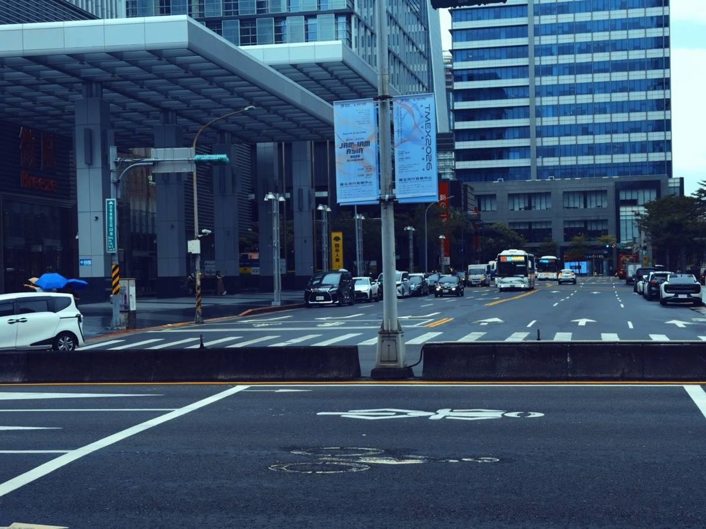

一顆鏡頭 · 一卷底片 · 三十六格
把拍照, 還給眼睛。
Gintone 把所有選擇移到快門之前,把注意力還給觀景窗。
SCROLL ↓
01 · 鉤子
妹妹說她想買一台 GR3。
我的第一個反應很攝影師:畫質有多好?感光元件多大?對焦快嗎?細細看完規格表,每一項都不算頂尖。但這台相機有一種魔力——你拿起它,就會想出門拍照。
讓人想拍照的,從來不是規格。
畫質不算頂尖
對焦不算頂尖
電池不算頂尖
魔力想帶出門
02 · 問題
完美,不等於有感覺。
iPhone 默默替你做了很多——疊圖、HDR、運算景深。它每多做一分,你就多得到一張「看似完美」的照片:曝光正確、細節完整、無可挑剔,也無話可說。
03 · 領悟
1
顆鏡頭
1
卷底片
36
格,拍了就算
04 · 平靜
世界,突然安靜下來。

22/36 · GT400老實說,這個 app 有一部分是做給我自己的。選擇越多,腦袋就越吵。當一卷底片替我把大部分的決定都先做完,取景的時候,世界會突然安靜下來。
要思考的變少了,焦慮也跟著變少。我漸漸地,在攝影裡找到平靜。
05 · 作品
36
FRAMES
拍滿一卷,照片跟著音樂的小節呼吸,
剪成一支值得分享的影片。
分享的單位是卷,不是張。
Gin
+ tone
06 · 命名
我叫大軍,「軍」的音很像 Gin;Gin Tonic 是我最喜歡的調酒——成分極度簡單,卻極度講究。就因為簡單,一杯 Gin Tonic 可以讓你看見一家酒吧的基本功。
配方很簡單,但每個細節都有講究。
它是大軍的 tone 調,所以叫 Gintone。